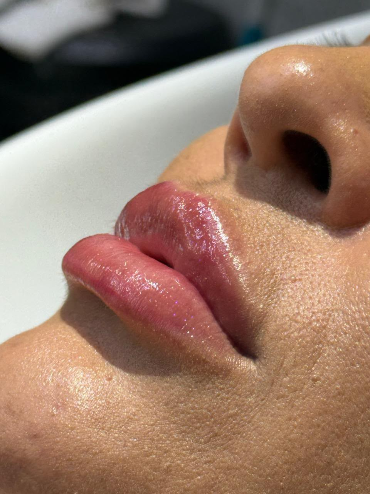

Tradição
Anos de experiência em coloração e um olhar artesanal de proporção: a especialidade que construiu a nossa história.
Estética avançada · Atelier de cabelos
Do rosto aos fios, um espaço pensado para mulheres poderosas: harmonização, cuidados com a pele e a coloração que é a nossa assinatura, com tradição, técnica e um olhar só seu.

Resultado real · Preenchimento labial
Nossa essência
Unimos a experiência de anos em coloração e o olhar clássico da beleza ao que há de mais atual em estética, sempre com segurança e respeito à sua história.
Anos de experiência em coloração e um olhar artesanal de proporção: a especialidade que construiu a nossa história.
Protocolos atualizados, produtos regulamentados e técnicas minimamente invasivas, do rosto ao couro cabeludo.
Avaliação individual, biossegurança rigorosa e acompanhamento próximo em cada etapa, do primeiro contato ao pós.
Atelier de cabelos
Colorimetria assinada pela Dra. Nicoly: uma especialidade de anos e a escolha de clientes exigentes, que não abrem mão de um loiro perfeito, de uma morena iluminada ou de uma cor impecável.
Toda transformação começa com uma avaliação do histórico dos seus fios.
Agendar no AtelierEstética avançada
Rosto, pele, olhar e corpo cuidados com a mesma precisão. Cada protocolo começa por uma avaliação individual.
Equilíbrio e proporção entre as regiões do rosto, valorizando seus traços naturais.
Quero saber maisContorno, hidratação e volume na medida certa, com lábios que conversam com o seu rosto.
Quero saber maisSuaviza linhas de expressão e previne marcas, mantendo a naturalidade dos movimentos.
Quero saber maisMicrodoses que refinam poros, controlam a oleosidade e deixam a pele com efeito blur.
Quero saber maisHidratação profunda e viço para uma pele com aspecto saudável e luminoso.
Quero saber maisEstimula o colágeno e melhora textura, manchas e marcas de acne.
Quero saber maisPele renovada, livre de impurezas e pronta para receber os tratamentos.
Quero saber maisRedução de gordura localizada no corpo e na papada, sem cirurgia.
Quero saber maisCílios desenhados para valorizar o seu olhar, do efeito natural ao marcante.
Quero saber maisIndicações, quantidades e valores são definidos somente após avaliação individual.
Galeria de resultados
Pacientes reais, que autorizaram o uso das imagens. Arraste para comparar.
Caso em destaque
Um resultado que valoriza o que já é seu: contorno labial definido, hidratação e proporção entre as regiões do rosto, sem exageros.
Quero um resultado assimImagens autorizadas pelas pacientes. Os resultados são individuais e podem variar de pessoa para pessoa.
Quem é a Dra. Nicoly
Biomédica · Colorimetrista · Cabeleireira · Lash designer
CRBM 51496
Biomédica, colorimetrista, cabeleireira e lash designer, a Dra. Nicoly une ciência e arte em um só lugar. Sua trajetória foi construída com técnica, estudo constante e um olhar sensível para cada mulher que atende, do rosto aos fios.
Para ela, um bom resultado é aquele que ninguém aponta, mas todo mundo percebe: você descansada, confiante e ainda mais você.
“Não se trata de mudar quem você é, e sim de revelar a melhor versão do que já existe.”Quero conhecer a Dra. Nicoly
Como funciona
Você chama no WhatsApp, tira suas dúvidas e escolhe o melhor horário.
Uma conversa sem pressa para entender seus desejos e analisar o seu rosto.
Indicação clara dos procedimentos, etapas e cuidados, feita só para você.
Orientações de pós e retorno para garantir um resultado bonito e seguro.
Dúvidas frequentes
Não encontrou sua pergunta? Fale com a gente, respondemos com carinho.
Tirar minha dúvidaNão. Nossa filosofia é realçar, nunca transformar. Cada indicação respeita a proporção do seu rosto para um resultado natural e elegante.
Utilizamos anestésico e técnicas que priorizam o seu conforto. A sensibilidade varia de pessoa para pessoa, e tudo é explicado antes de começar.
Depende do procedimento, do produto e do seu organismo. Na avaliação você recebe uma estimativa clara e o plano de manutenção ideal.
Os valores são definidos após a avaliação individual, porque cada plano é único. Chame no WhatsApp para agendar e conhecer as condições.
Depende do histórico e da saúde dos seus fios. Transformações maiores podem ser feitas em etapas, para chegar ao tom desejado preservando a qualidade do cabelo.
Em muitos casos, sim. Na avaliação montamos uma agenda que respeita os intervalos de cada procedimento para você aproveitar ao máximo.
Sim, e você recebe todas as orientações por escrito. Na maioria dos casos é possível retomar a rotina no mesmo dia.
Agenda aberta
Agende sua avaliação e descubra o que um olhar cuidadoso pode fazer pela sua autoestima.
Chamar no WhatsAppSegunda a sábado
9h às 18h